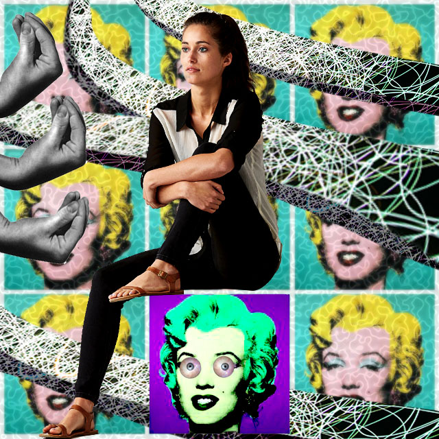
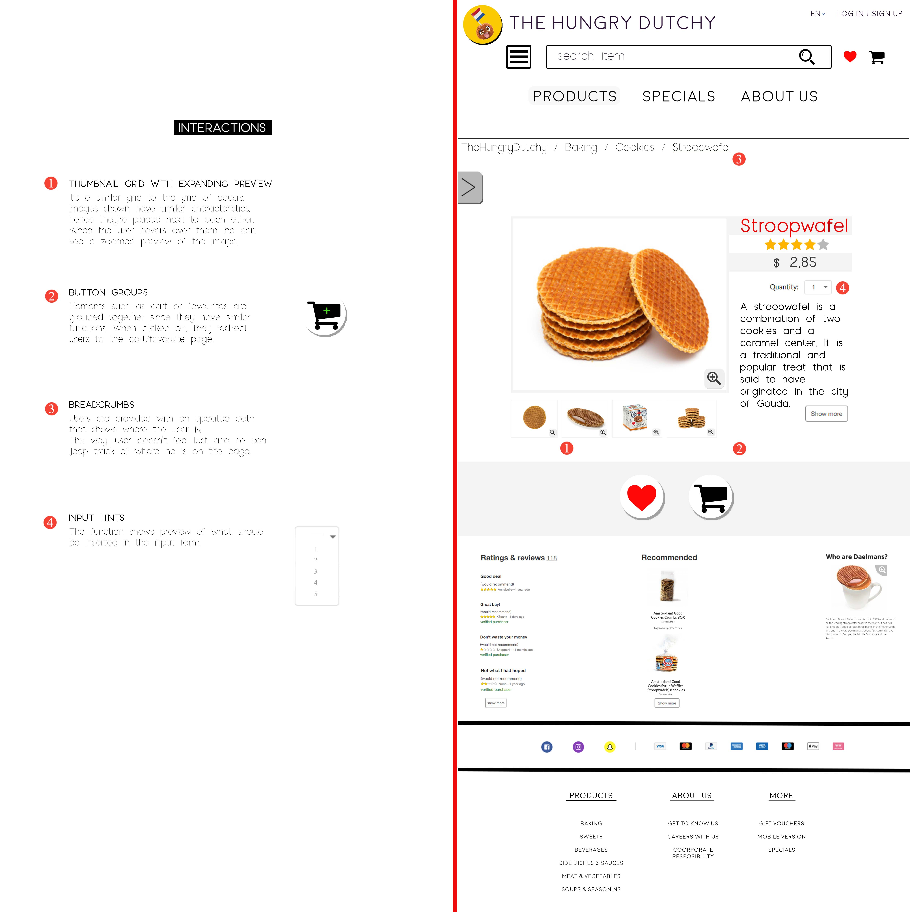
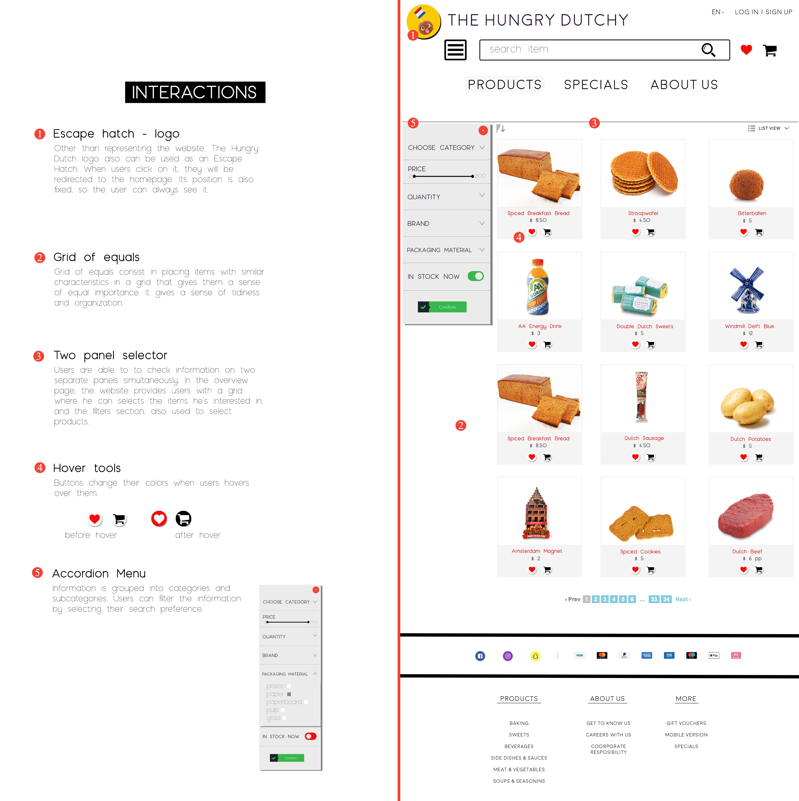
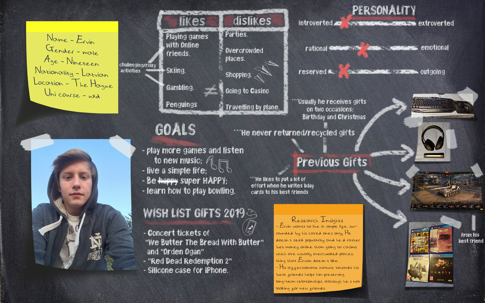
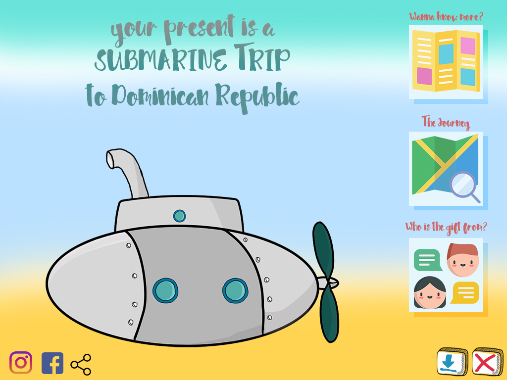
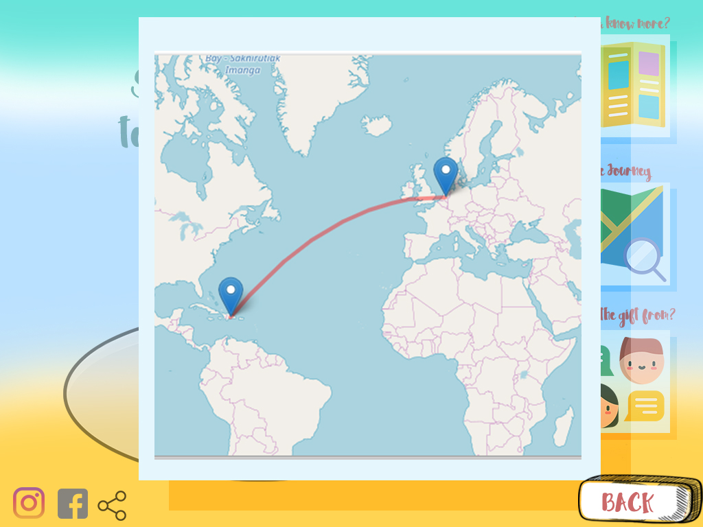
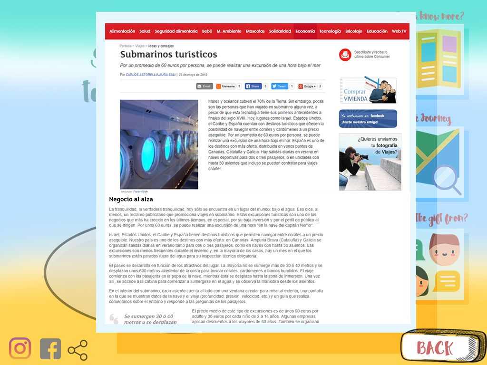
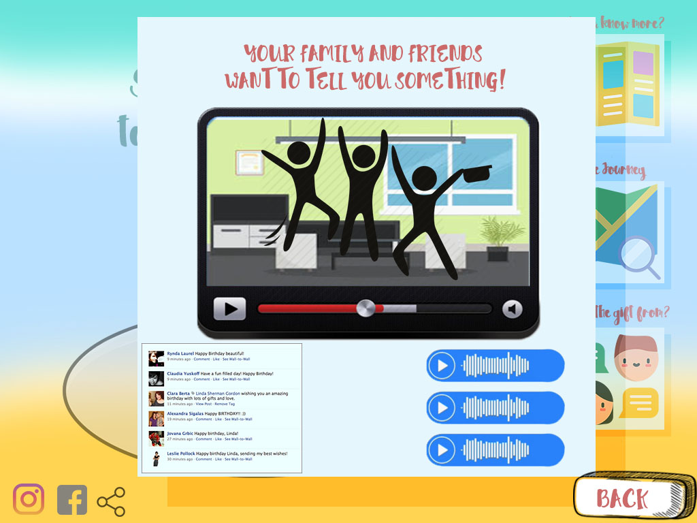

Design For emotion is a course aimed at preparing future designers to think about humans' emotions by working on the dramatic arch of a specific context.
During this project, I focused on the emotion distraction and together with my team, I created collages, videos, storyboards.

I chose to represent this emotion by making the distracted person sit on her own distractions. While all the other pop-portraits of Marilyn Monroe are blurred and not well distincted and represent the main characters duties/tasks/to-do things, the different one (violet) is the distraction itself, a weird-looking Marilyn Monroe that makes the main character go off-track. The textures with black background represent the tentacles, a tempting creature (feeling of agitation) that surround the main character.
Lastly, the hand gesture on the left side, which is a famous Italian gestures to communicate disappointment over someone else’s actions, represents the part of the brain that wants to take control of her mind and go back on track.
INTERACTION DESIGN
Among all assignments from Interaction Design, I decided to include the one that challenged UXD students to recreate an already existing website and make it better by using familiar patterns, interactions, etc.
The following images show some of the graphics I created for the website.


BESPOKE PROJECT
For this course, we were asked to create a memorable gift experience for our user. Activities consisted of: brainstorming, researching, creating user portraits, design visions, insights, storyboards, interviews, prototypes, wireframes, presentation, physical prototype and final clickable product.
Some examples of the material created during Bespoke:

The image above is the user portrait, an overview of the persona which shows habits, preferences and other general information about the userBelow, some slides of the clickable prototype I've created for the user in order to surprise him with the final gift.




PROGRAMMING
During programming, UXD students learnt how to communicate through a new complex language: JavaScript. We had to complete some challenges, Click on the following urls to check them out:
BEP was a unique course in which students had the chance to experiment new prototyping techniques by creating sounds, projections, sketches, tests. click on the following url to see my project.